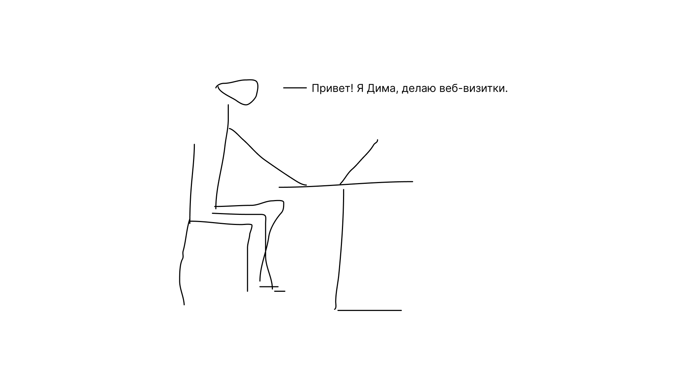
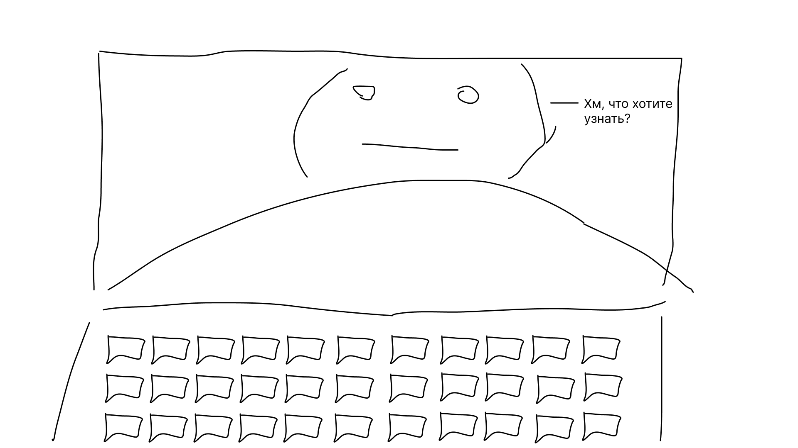
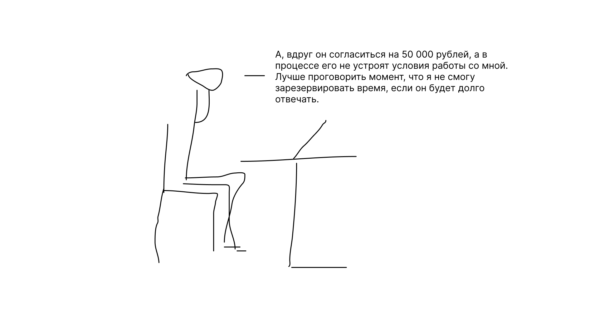
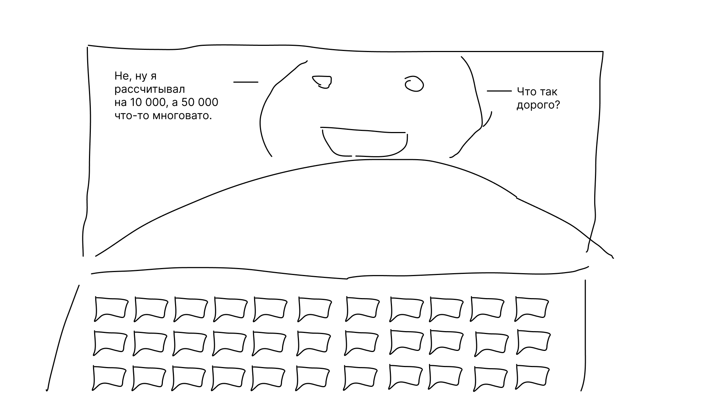

Знакомьтесь — это Дима. Он веб-разработчик. Делает сайты-визитки.
В его портфолио десятки работ и встреч с потенциальными клиентами, но коммерческих заказов у него еще не было.
Завтра у него созвон с потенциальным клиентом и в этот раз он не хочет облажаться, поэтому весь прошлый месяц он читал советы Бюро Горбунова. На ближайших переговорах он решил изменить подход и попробовать вести переговоры по принципам Бюро.
Созвон начался с того, что клиент спросил Диму про цену и сроки. Но Дима помнил свой неудачный опыт. Когда он называл цену без понимания задачи, люди просто заканчивали разговор, либо разговор скатывался до торговли не понятно за что. Поэтому Дима спокойно объяснил, что без четкого представления задачи не сможет дать адекватную оценку проекту.
За время встречи Диме удалось узнать, что клиент делает сайт репетитора по английскому языку. Оказалось, что клиент хочет не только разместить информацию о себе на сайте, но регулярно выкладывать статьи туда.
Дима договорился с клиентом, что отправит свое понимание задачи на следующий день. Для клиента это было не привычно, но он согласился.
Когда Дима отправил понимание задачи, клиент снова спросил про цену. Дима очень хотел угодить клиенту и назвать цену, но вовремя остановил себя. Дима понял, что этим действием он укажет на свою нужду. Поэтому объяснил клиенту, что не будет называть цену, пока они не согласуют сроки и цену. Обосновал он это так: «так я смогу помочь вам принять взвешенное решение и не подалеть об этом».
В этот же день Дима отправил клиенту документ со сроками и условиями работы. Там было про время, которое он планирует зарезервировать на клиента и про то как видит взаимодействие.
Через пару часов клиент посмотрел документ и снова попросил назвать цену. На этот раз Дима был намерен назвать цену, но не торопился делать это.
Дима очень хотел просто отправить цену сообщением. Но потом вспомнил, что не один раз так терял клиентов. На этих переговорах он решил собрать весь материал, который он согласовал с клиентом, в конце добавил цену и только потом отправил.
Первая реакция была — дать скидку. Но Дима снова остановил себя, потому что вспомнил, что так он покажет свою нужду. Если клиент согласен с задачей, условиями и сроками, то значит Дима вложил в свое предложение недостаточно ценности. Поэтому Дима спросил у клиента, как он может увеличить ценность своего предложения.
В итоге клиент согласился не только на сайт, но и на дальнейшее обслуживание.
Дима применял советы Бюро, поэтому у него получилось заключить сделку, о которой не пожалела ни одна сторона. Попробуйте и вы. Если не поможет, вернетесь к старому подходу.
Рассказчик: Станислав Клименко.
Шрифт: Verdana.
Что почитать: сайт Бюро Горбунова, страницы «Вопросы» и «Управление проектами».